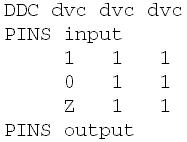

The Structure of the X-Mode Control File
The x-mode control file consists of one or more blocks each of which defines the state character sequences that are admitted for a certain sequence of ASCII device cycles, for all pins. Such a block has the following general format:
DDC <ASCII_dvc_1> <ASCII_dvc_2> ... <ASCII_dvc_n>
PINS <list_of_pins_or_pin_groups_1>
[<ch_1_1> <ch_2_1> ... <ch_n_1> [-> <mch_1_1> <mch_2_1> ... <mch_n_1>]
<ch_1_2> <ch_2_2> ... <ch_n_2> [-> <mch_1_2> <mch_2_2> ... <mch_n_2>]
...
<ch_1_m> <ch_2_m> ... <ch_n_m> [-> <mch_1_m> <mch_2_m> ... <mch_n_m>]]
...
PINS <list_of_pins_or_pin_groups_k>
...
The function of the individual lines is as follows:
- DDC <ASCII_dvc_i> (mandatory):
This line defines the length of the sequence and, for each position, the ASCII device cycle to
which the character belongs. In general, the allowed lengths are 1 through 10 (1 through 8 for
fast pins). In two cases higher numbers are allowed:
- 12 and 16 can be used for NP3G-XS (see Defining the Clock for Fast Differential Receive Pins: ssb on/off).
- In connection with HXA multiplexing, numbers up to 32 (8 * 4, where 8 is the maximum x-mode
for fast pins and 4 is the maximum multiplexing factor) are allowed. See Mapping HXA Pins To Pin Scale Pins and Vector Translation for HXA Multiplexing for details on HXA mapping.
The device cycles must be defined in the ASCII timing file. The same device cycle name can occur more than once; in fact, the most common case will be that the sequence is "homogeneous", that is, that the same device cycle name is specified for every <ASCII_dvc_i>.
For homogeneous sequences, a block will be applied to a pattern if the ASCII device cycle is associated with the pattern, and the length of the sequence equals its x-mode factor. If the state characters belong to more than one ASCII device cycle, the application rules are more complex. For details see Creating Sequences from Several ASCII Device Cycles .
- PINS
<list_of_pins_or_pin_groups_i> (mandatory):
This line defines the pins for which the admitted sequences are to be specified. Note that all
pins must occur in the block.
You can add the @diff qualifier to the positive pin of a pair of differential fast pins. If you do, you must not create a block for the negative pin. You can use the qualifier for a pair of differential pins in the x-mode control file only if you use it also in the ASCII timing file for this same pair. Note that the timing translation accepts this qualifier only if it is called with -z PS3600.
- <ch_i_k>[ ->
<mch_j_k>] (optional): Each of these lines
specifies either one sequence of state characters, or two such sequences which are connected by
the mapping operator ->. In the first case, the specified sequence
will occur in the timing map file, and a waveform will be generated from it. In the second case,
the sequence to the left of -> will occur in the timing map file (that
is, it is supposed to occur in the ASCII vector file), but no waveform will be generated from
it. Rather, it will be mapped in the timing map file to the index of the waveform that was
generated from the sequence to the right of ->. For more details on
the mapping operator see The Mapping Operator ‘->'.
If no state character sequence line is specified, then waveforms will be created for all possible state sequences of all pins specified in the respective PINS statement.
For <ch_i_k>, the following values are admitted :
- a single state character (for example, 0 or H),
- a list of state characters enclosed by brackets (for example, [01]),
- the wildcard character *,
- a reference to another column of the same sequence, denoted by a backslash (‘\') and a
column number (for example, \2).
If the sequence contains a state character list or the wildcard character, then it is generic and represents a collection of concrete sequences. See State Character Lists and References for details.
For <mch_j_k>, the following values are admitted :
- a single state character,
- a reference to a column of the sequence before the mapping operator, denoted by a
dollar sign ($) and a column number (for example,
$2).
For a detailed explanation of these options see The Mapping Operator ‘->'.
The following example shows a block where three state character sequences are admitted for the pin group input, and all sequences are admitted for the pin group output:
